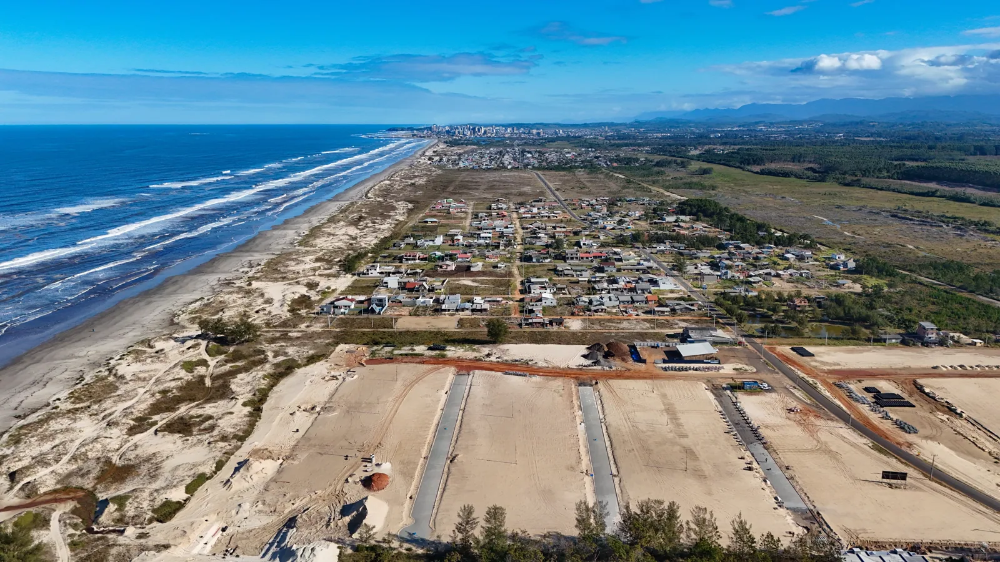
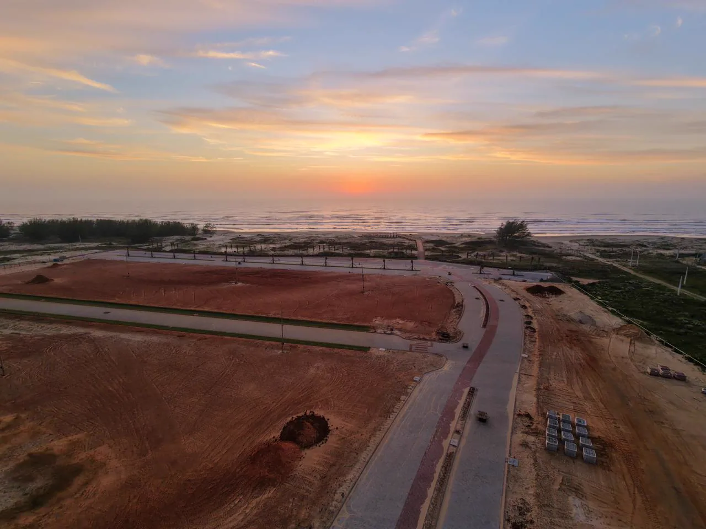
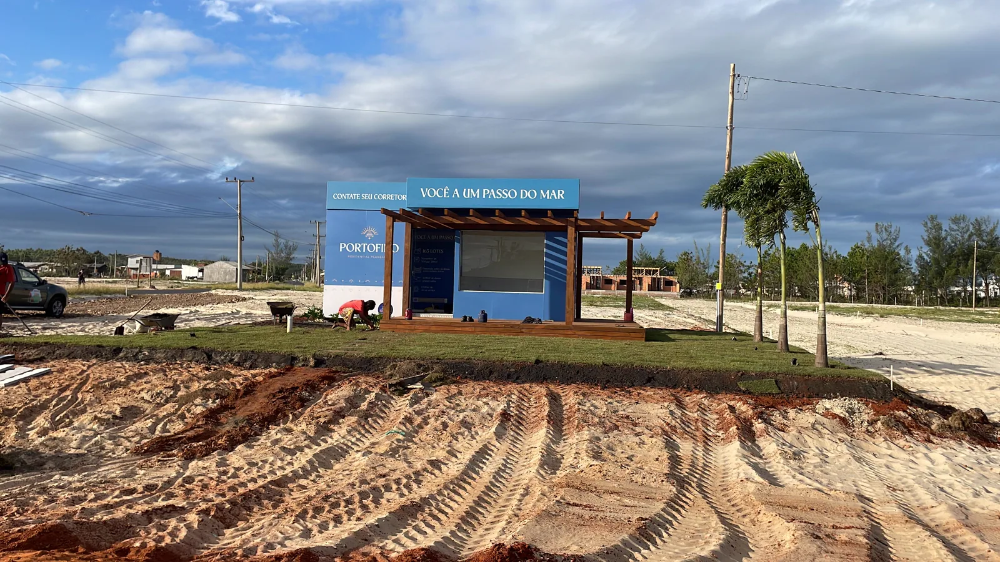
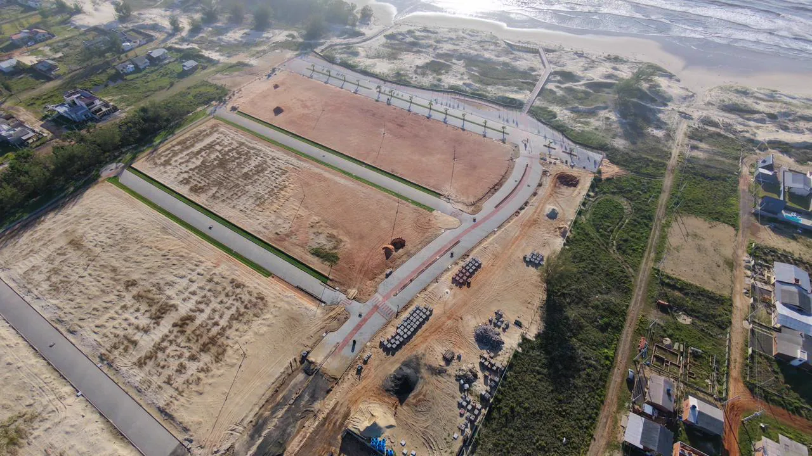

Execução que gera valor
Infraestrutura pensada para ir mais longe.
Solo, vias, drenagem e urbanização trabalham juntos para formar espaços funcionais, duráveis e preparados para crescer.
Explore nossa atuação

Engenharia & urbanização
Planejamento e execução para criar a base de empreendimentos que fazem sentido hoje e no futuro.
Execução que gera valor
Solo, vias, drenagem e urbanização trabalham juntos para formar espaços funcionais, duráveis e preparados para crescer.
Explore nossa atuaçãoQuem somos
A Monlote atua com engenharia e urbanização, conectando planejamento e execução em cada frente da infraestrutura. O trabalho começa na leitura do terreno e avança até as vias e espaços que dão forma ao empreendimento.
Da preparação do solo à infraestrutura completa, entregamos soluções sólidas para valorizar empreendimentos e seu entorno.
Conheça a empresaProjetos em destaque
Nossa atuação
Integramos as frentes essenciais da infraestrutura para transformar áreas em lugares preparados para a vida acontecer.
Fale sobre sua área
Preparação precisa do terreno, movimentação de solo e conformação de platôs.
Vias seguras e duráveis que conectam pessoas e valorizam o empreendimento.
Sistemas de águas pluviais que protegem a infraestrutura e o território.
Implantação integrada para empreendimentos organizados e funcionais.
Encontre seu caminho
Conheça uma obra documentada e as frentes que fazem parte da nossa atuação.

Um novo jeito de viver próximo ao mar, com infraestrutura planejada e conexão com a paisagem.
Conheça o projeto ↗
Do preparo do terreno às redes, vias e urbanismo: conheça as frentes que estruturam um empreendimento.
Conheça as frentes ↗
Vamos conversar?
Conte-nos sobre a sua área ou empreendimento. A Monlote está pronta para entender os próximos passos.
Entre em contatoMétodo Monlote
Um caminho claro, integrado e acompanhado de perto, do primeiro estudo à entrega.
Leitura técnica do terreno, das necessidades e do potencial do empreendimento.
Estratégia executiva, cronograma e integração das disciplinas.
Gestão de equipes, equipamentos, qualidade e segurança em campo.
Validação técnica e infraestrutura finalizada com alto padrão.
Diário de obra
Acompanhe projetos, engenharia e os bastidores do que construímos.

Portofino, Passo de Torres
Conheça o projeto ↗Portofino, Passo de Torres
Veja as etapas ↗ Em campoPortofino, Passo de Torres
Veja as imagens ↗Seu próximo projeto começa aqui
Converse com a nossa equipe sobre urbanização, infraestrutura ou seu próximo empreendimento.
Iniciar conversa